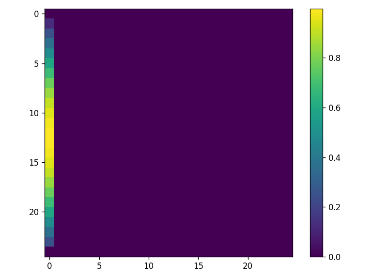
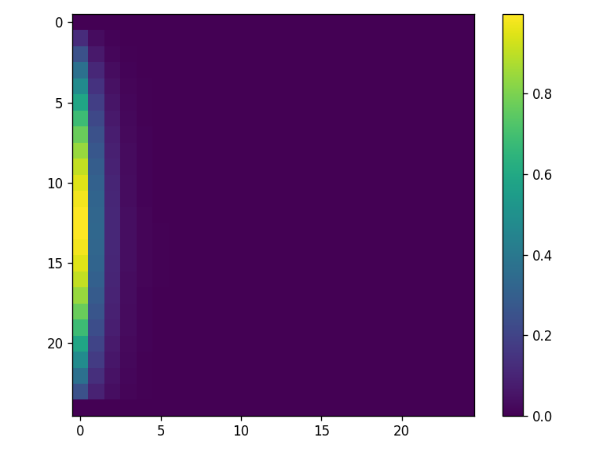
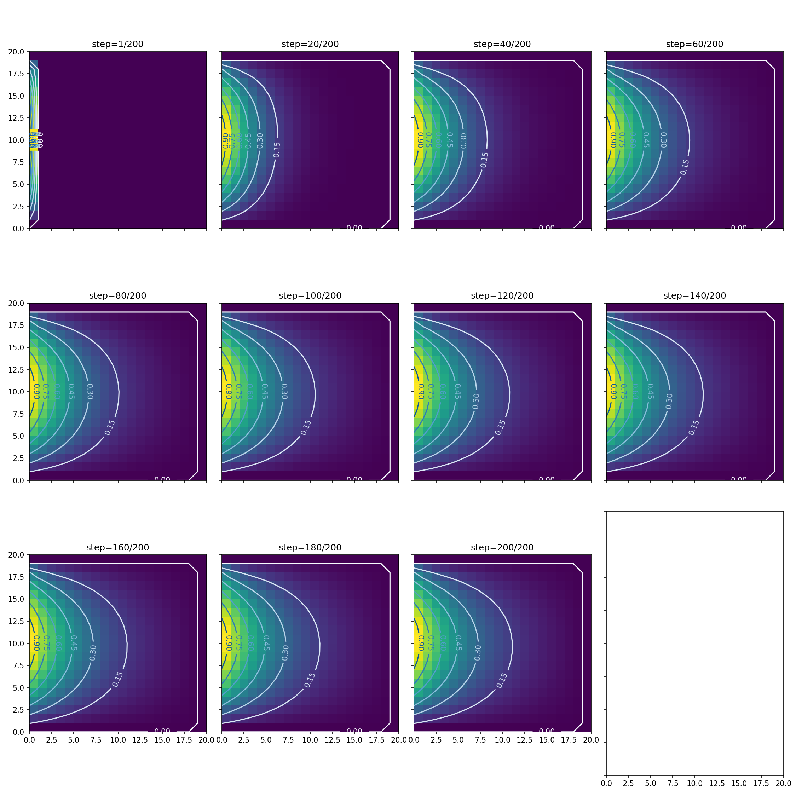
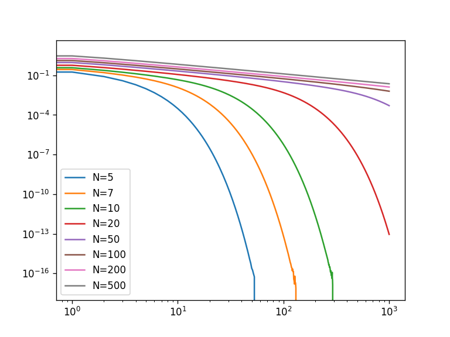
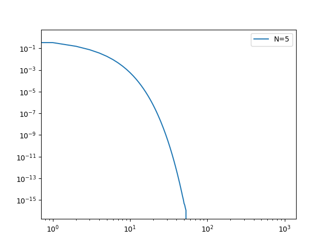

Partial Differential equations: Finite differences#
REFS:
Franklin, Computational methods for Physics
Landau y Paez, Computational physics
Boudreau et al, Applied Computational Physics
Why Partial Differential Equations?#
Many physical systems depend simultaneously on space and time.
For example:
The temperature inside a metal rod changes with position and time.
The electric potential inside a region depends on spatial coordinates.
Sound waves propagate through air.
Quantum particles are described by wavefunctions that evolve in space and time.
Fluids exhibit velocity and pressure fields varying throughout space.
Such systems cannot be described by ordinary differential equations (ODEs), because ODEs involve derivatives with respect to a single independent variable.
Instead, we need partial differential equations (PDEs).
A PDE relates a function
to its partial derivatives with respect to several variables. For nice visualizations check VisualPDE.
Physical phenomenon |
Governing PDE |
Type |
|---|---|---|
Electrostatics (charges at rest) |
Poisson / Laplace equation |
Elliptic |
Heat conduction, particle diffusion |
Heat / diffusion equation |
Parabolic |
Vibrating string, sound, light |
Wave equation |
Hyperbolic |
Navier–Stokes equation |
Mixed / nonlinear |
|
Quantum mechanics |
Schrödinger equation |
Parabolic (in imaginary time) |
Gravity (general relativity) |
Einstein field equations |
Hyperbolic |
Tip
Laplace Equation
Describes electrostatic potentials in charge-free regions.
Tip
Heat Equation
Describes diffusion of heat.
Tip
Wave Equation
Describes vibrations, sound, and electromagnetic waves.
See more at https://www.acs.psu.edu/drussell/demos.html, https://falstad.com/ripple/
Classification of PDEs#
All linear second-order PDEs in two variables can be written as
The sign of the discriminant \(\Delta = B^2 - 4AC\) determines the character of the equation — and completely determines the type of numerical method needed:
Note
Discriminant < 0 → Elliptic (e.g. Laplace, Poisson) Describes steady states. Boundary conditions on a closed domain.
Note
Discriminant = 0 → Parabolic (e.g. Heat / diffusion) Describes irreversible evolution in time. Initial condition + boundary conditions.
Note
Discriminant > 0 → Hyperbolic (e.g. Wave equation) Describes reversible wave propagation. Initial conditions + boundary conditions.
Why Do We Need Numerical Methods?#
Only a limited number of PDEs possess analytical solutions. Even simple geometries may prevent exact solutions. For simple geometries and boundary conditions, exact solutions exist and are taught in mathematical physics courses (separation of variables, Green’s functions, Fourier series…). For example:
has the analytical solution \(V(x, y) = \sin(\pi x)\, e^{-\pi y}\).
But reality rarely cooperates:
Irregular geometries (a heart, a turbine blade, a microchip)
Nonlinear material properties (\(\alpha\) depending on temperature)
Coupled systems (temperature affecting electric conductivity)
Moving boundaries
Heat diffusion in an irregular object.
Electric potential in a complex device.
Vibrations of a non-uniform membrane.
Fluid flow around an airplane wing.
See more at https://visualpde.com/explore
In all such cases numerical methods are the only practical tool.
The basic idea is simple:
Replace continuous space by a grid.
Replace derivatives by finite differences.
Solve the resulting algebraic equations.
The Finite Difference Idea#
All the numerical methods in this chapter share one core idea: replace continuous derivatives by discrete differences on a grid.
For a function \(u(x)\) sampled at points \(x_i = x_0 + i\Delta x\):
Substituting these into a PDE turns it into a system of algebraic equations — one per grid point — that a computer can solve.
The key parameters are:
Grid spacing \(\Delta x\), \(\Delta y\), \(\Delta t\): smaller → more accurate, but more computation.
Stability: some methods require \(\Delta t\) to be small relative to \(\Delta x\) to avoid blow-up.
Boundary conditions: what you fix at the edges completely determines the solution.
The first example: The Poisson equation#
The following is an example of an elliptical differential equation, determined by the boundary conditions :
In 2D, there are several solutions and the actual one depends on the boundary conditions. For example, for the Laplace equation you have
as solutions. We the density \(\rho\) is null, we have the Laplace equation. It appears also when the heat equation stabilizes
A finite difference method discretizes the derivatives on a grid. For instance, using the central difference it is possible to rewrite the 2D Poisson equation as (Laplace equation corresponds to \(\rho = 0\) )
which can be rewritten as (let’s assume \(\Delta x = \Delta y = \Delta\))
and, therefore
This can be seen in two ways: as a matrix equation or as an equation showing that the value at a given position, \(V_{i, j}\), is kind of an average of the surrounding neighbors and the source term (Jacobi method), as seen (ref: https://barbagroup.github.io/essential_skills_RRC/laplace/1/#laplaces-equation)

The first approach can be solved by using the typical matrix methods (on the banded matrix obtained), while the second one gives raise to the relaxation method, where you sweep the matrix several times until stabilization is achieved.
Relaxation solution#
Let’s solve the Laplace problem (\(\rho = 0\)) using both methods with a simple example. Fix the boundaries as
with \(x, y \in [0, 1]\), and \(a \) any value on the border. These are called Dirichlet boundary conditions (where you specify the function values at the boundary). Finally, use at least \(N_x = N_y = 25\), so \(\Delta = 1/25\), \(x_i = x_0 + i\Delta, y_j = y_0 + j\Delta\). We need to solve the equation
To do so, we apply this relationship to each point in the grid, without overwriting the boundary conditions, and we do that until the values are not changing much. Firs, let’s define the problem conditions (to be changed later)
To solve the system, we will create functions to
Define the problem domain
Apply the boundary conditions
Perform a relaxation iteration: this can de done in several ways
Actually solve the system, calling the appropriate iteration and comparing
Problem setup#
# Global problem definition
import numpy as np
def setup_problem(N):
XMIN = 0.0
YMIN = 0.0
DELTA = 1.0/N # L = 1
X = XMIN + DELTA*np.arange(0, N)
Y = XMIN + DELTA*np.arange(0, N)
return X, Y
Boundary conditions#
Now create a function for the boundary conditions
# Boundary conditions
# Apply the boundary conditions here
# Assume a square matrix
# Verify with the next plot
def bc(matrix, x, y):
# YOUR CODE HERE
pass
def is_boundary(ix, iy, N):
"Returns true if a point is a boundary. Assumes square grid"
if ix == 0: return True
if iy == 0: return True
if ix == N-1: return True
if iy == N-1: return True
return False
# Visualize the boundary condition
N = 25
X, Y = setup_problem(N)
M = np.zeros((N, N))
bc(M, X, Y)
import matplotlib.pyplot as plt
img = plt.imshow(M)
plt.colorbar(img)
plt.tight_layout()
#plt.savefig("fig/laplace_boundary.png", dpi=120)
{kind=link}

Iteration#
Now let’s perform an iteration, which means, going through the matrix and applying the average per site as shown before.
And this will be a simple example for single iteration step. In this case, we are avoiding the external walls since they are boundary conditions. We are using the fast numpy notation (see also https://becksteinlab.physics.asu.edu/learning/76/phy494-computational-physics?wchannelid=bp7lsp6dmx&wmediaid=284owsl3dp), but of course you can use loops (specially for more complex boundary problems). Here we are updating into the same matrix.
Warning
Be careful with the boundary conditions Be careful to not affect the boundaries when updating the matrix
# Full iteration using for loops, this is a single jacobi iteration (overwrite the matrix)
def jacobiITER(matrix):
# YOUR CODE HERE
pass
# Test
# Visualize the iteration condition: some information must have propagated
N = 25
X, Y = setup_problem(N)
M = np.zeros((N, N))
bc(M, X, Y)
jacobiITER(M)
import matplotlib.pyplot as plt
img = plt.imshow(M)
plt.colorbar(img)
plt.tight_layout()
#plt.savefig("fig/laplace_1iter.png", dpi=120)
{kind=link}

System solution#
Finally, let’s perform some iterations to check if the system is converging somewhere
import time
def solve_system(N, niter, iter_method):
X, Y = setup_problem(N)
V = np.zeros((N, N))
bc(V, X, Y)
# Example iteration
for step in range(niter):
#print(V)
t0 = time.time()
iter_method(V)
t1 = time.time()
print(f"Total time iterating: {t1-t0}")
#print(V)
#print()
solve_system(N=500, niter=10, iter_method=jacobiITER)
Notice that we can also use numpy directly as
# Full iteration using only numpy indexing, but implicitly assumes the boundary condition
def jacobi_np(matrix):
"""
This uses numpy notation to perform the vectorized update
"""
matrix[1:-1, 1:-1] = 0.25*(matrix[2:, 1:-1] + matrix[0:-2, 1:-1] +
matrix[1:-1, 2:] + matrix[1:-1, 0:-2])
solve_system(N=500, niter=10, iter_method=jacobi_np)
Total time iterating: 0.00587916374206543
Total time iterating: 0.0015501976013183594
Total time iterating: 0.0006401538848876953
Total time iterating: 0.0006601810455322266
Total time iterating: 0.0006663799285888672
Total time iterating: 0.0006394386291503906
Total time iterating: 0.0006570816040039062
Total time iterating: 0.0006642341613769531
Total time iterating: 0.0006456375122070312
Total time iterating: 0.0006551742553710938
But the numpy approach can be complicated to write if the boundary conditions are not easy to express.
Graphical verification#
Let’s check it graphically. This function creates some plots to show the evolution. You can also write an animation
import matplotlib.pyplot as plt
import numpy as np
def solve_system(N, niter, iter_method, NDISPLAY=0):
# figs setup
if NDISPLAY > 0:
NCOLS = 4
NROWS = int(((niter/NDISPLAY)/NCOLS))
if ((niter/NDISPLAY)%NCOLS) != 0:
NROWS += 1
fig, ax = plt.subplots(NROWS, NCOLS, sharex=True, sharey=True, figsize=(15, 15))
ax = ax.flatten()
# Problem setup
X, Y = setup_problem(N)
V = np.zeros((N, N))
bc(V, X, Y)
# aux vars in case the iteration returns something
aux = np.zeros(niter)
# Example iteration
idisplay= 0
for step in range(1, niter+1):
if NDISPLAY>0 and (step%NDISPLAY == 0 or step==1):
# ax[idisplay].set_title(step)
# ax[idisplay].imshow(V)
ax[idisplay].set_aspect('equal', 'box')
ax[idisplay].pcolormesh(V)
ax[idisplay].set_title(f"step={step}/{niter}")
CS = ax[idisplay].contour(V, cmap='Blues')
ax[idisplay].clabel(CS, CS.levels, inline=True)
idisplay += 1
aux[step-1] = iter_method(V)
if NDISPLAY > 0:
plt.tight_layout()
#fig.savefig("fig/laplace_relax.png", dpi=150)
return aux
tmp = solve_system(N=20, niter=200, iter_method=jacobiITER, NDISPLAY=20)
---------------------------------------------------------------------------
TypeError Traceback (most recent call last)
Cell In[18], line 1
----> 1 tmp = solve_system(N=20, niter=200, iter_method=jacobiITER, NDISPLAY=20)
TypeError: solve_system() got an unexpected keyword argument 'NDISPLAY'
{kind=link}

2D animation#
def solve_system_animated(N, niter, iter_method, NDISPLAY=10):
X, Y = setup_problem(N)
V = np.zeros((N, N))
bc(V, X, Y)
frames = []
for step in range(1, niter + 1):
iter_method(V)
if step % NDISPLAY == 0 or step == 1:
frames.append((step, V.copy()))
fig, ax = plt.subplots(figsize=(5, 5))
mesh = ax.pcolormesh(frames[0][1])
title = ax.set_title(f"step=1/{niter}")
plt.tight_layout()
def update(i):
step, V_snap = frames[i]
mesh.set_array(V_snap.ravel())
title.set_text(f"step={step}/{niter}")
# contours must be redrawn from scratch each frame
for c in ax.collections[1:]: # [0] is the pcolormesh, skip it
c.remove()
CS = ax.contour(V_snap, cmap='Blues')
ax.clabel(CS, CS.levels, inline=True)
return mesh, title
ani = animation.FuncAnimation(fig, update, frames=len(frames), interval=200, blit=False)
plt.close(fig)
return HTML(ani.to_jshtml())
solve_system_animated(N=50, niter=500, iter_method=jacobiITER, NDISPLAY=10)
3D animation with matplotlib#
def solve_system_animated_3d(N, niter, iter_method, NDISPLAY=10):
X, Y = setup_problem(N)
XX, YY = np.meshgrid(X, Y) # both (N, N)
V = np.zeros((N, N))
bc(V, X, Y)
frames = []
for step in range(1, niter + 1):
iter_method(V)
if step % NDISPLAY == 0 or step == 1:
frames.append((step, V.copy()))
fig = plt.figure(figsize=(6, 5))
ax = fig.add_subplot(111, projection='3d')
def update(i):
ax.cla()
step, V_snap = frames[i]
ax.plot_surface(XX, YY, V_snap, cmap='viridis', edgecolor='none')
ax.set_title(f"step={step}/{niter}")
ax.set_xlabel("X"); ax.set_ylabel("Y"); ax.set_zlabel("V")
ax.view_init(elev=30, azim=-60)
ani = animation.FuncAnimation(fig, update, frames=len(frames), interval=200, blit=False)
plt.close(fig)
return HTML(ani.to_jshtml())
solve_system_animated_3d(N=50, niter=500, iter_method=jacobiITER, NDISPLAY=10)
3D animation with pyvista#
# Installation
#!uv pip install pip
#!pip install pyvista trame
import pyvista as pv
# COMPLETE IT!
Numerical stabilization#
To have a quantitative relaxation index, we could compare the new values with the old ones, so let’s redefine the iteration step method to return the estimator
# Compute the difference between the old and the updated matrix
def jacobi_diff(matrix):
matrix_old = matrix.copy() # Might be slow, creates copies all the time
jacobiITER(matrix)
diff = np.linalg.norm(matrix - matrix_old)
return diff
Notice that the convergence depends strongly on the space resolution:
for N in [5, 7, 10, 20, 50 , 100, 200, 300]:
print(N)
diff = solve_system(N=N, niter=1000, iter_method=jacobi_diff, NDISPLAY=0)
plt.plot(diff, label=f"{N=}")
plt.xscale("log")
plt.yscale("log")
plt.legend()
#plt.savefig("fig/laplace_relax_2.png", dpi=120)
{kind=link}

A performance discussion#
But this loop version is very slow. When you need to optimize something, you need to measure it (using profilers). Here we will use https://jakevdp.github.io/PythonDataScienceHandbook/01.07-timing-and-profiling.html and https://mortada.net/easily-profile-python-code-in-jupyter.html .
%%timeit
tmp = solve_system(N=50, niter=100, iter_method=jacobiITER)
# 87.5 ms ± 1.5 ms per loop (mean ± std. dev. of 7 runs, 10 loops each)
%%timeit
tmp = solve_system(N=50, niter=100, iter_method=jacobi_np)
# 652 μs ± 10.3 μs per loop (mean ± std. dev. of 7 runs, 1,000 loops each)
We can optimize even more with numba (see https://stackoverflow.com/questions/61161072/optimizing-vectorized-operations-made-by-sections-in-numpy):
#!conda install -y numba
#!pip install -y numba
!uv pip install numba numpy==2.0
from numba import jit, njit
import numpy as np
@njit(parallel=False)
def jacobi_opt(matrix):
#matrix_old = matrix.copy() # Might be slow, creates copies all the time
N = matrix.shape[0] # (N, N)
# Implement here the full jacobi iteration again without calling any other function
# So boundary contition must be here
# YOUR CODE HERE
pass
#rij = matrix - matrix_old
#diff = np.linalg.norm(rij)
return 0.0
%%timeit
tmp = solve_system(N=50, niter=100, iter_method=jacobi_opt)
# 457 μs ± 558 ns per loop (mean ± std. dev. of 7 runs, 1,000 loops each)
Exercise: Plane capacitor#
Now , besides the given boundary conditions, add two lines representing a plane capacitor, with opposite voltages of \(\pm 3\) volts, with length \(2L_y/3\), at \(L_x/3\) and \(2L_x/3\). Plot the final solution as a 2D map and as a 3D map.
# YOUR CODE HERE
pass
Exercise: circular ring#
Now , besides the given boundary conditions, add a circular ring with constant voltage of 3 volts and radius \(L_x/4\). Plot the final solution as a 2D map and as a 3D map.
# YOUR CODE HERE
pass
Exercise: Plot the electrical field#
For any of the previous examples, use (for example) a quiver plot to plot the electric field, defined as
See https://nbviewer.org/urls/www.numfys.net/media/notebooks/relaxation_methods.ipynb
# YOUR CODE HERE
pass
Exercise: Add two square charges#
Solve the Poisson equation with two square charges of size \(L_x/10\) on the diagonal. Use \(\epsilon_0 = 1\)
# YOUR CODE HERE
pass
Exercise: Implement over-relaxation#
Calibrate \(\omega\) (see https://en.wikipedia.org/wiki/Successive_over-relaxation)
from numba import jit
@jit
def jacobi_sor_opt(matrix, omega):
matrix_old = matrix.copy() # Might be slow, creates copies all the time
# YOUR CODE HERE
pass
rij = matrix - matrix_old
diff = np.linalg.norm(rij)
return diff
#return gs_opt(matrix)
#for N in [5, 7, 10, 20, 50 , 100, 200, 500]:
for N in [5]:
print(N)
OMEGA=1.9
diff = solve_system(N=N, niter=1000, iter_method=lambda m: jacobi_sor_opt(m, OMEGA))
plt.plot(diff, label=f"{N=}")
plt.xscale("log")
plt.yscale("log")
plt.legend()
plt.savefig("fig/laplace_jacobi_sor.png")
{kind=link}

Exercise: Stop after tolerance is achieved#
Modify the iteration procedure to stop after some given precision has been achieved
# YOUR CODE HERE
pass